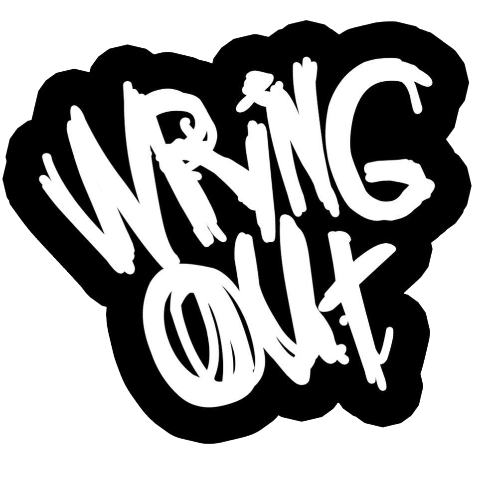
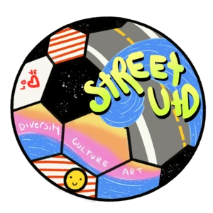
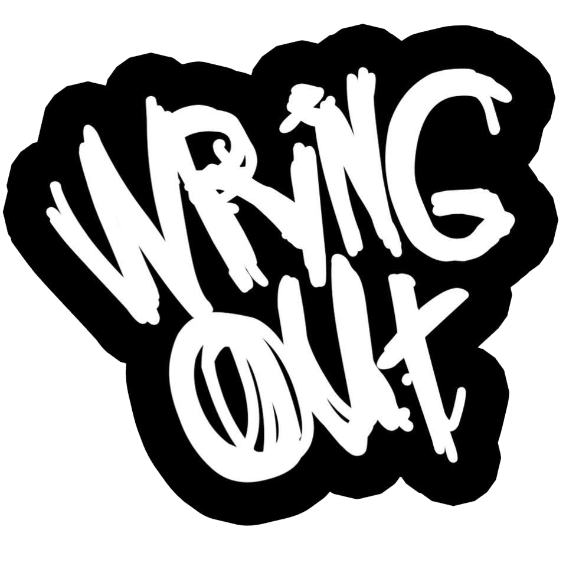
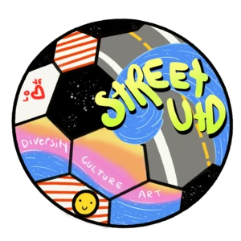

LOWBAT is a video production group that seeks to elevate brands in the Hampton Roads area to appeal to viewers and consumers on the national scale. From music videos to advertisements, our productions are centered around one idea: to evolve culture. Working with local artists and organizations, our team-driven workflow has proven to put our projects a step above the rest.


 




Whether you have a fully realized idea or you're starting from scratch, we'll start out by meeting with you to discuss your project and collaborate on ideas with you. We'll identify your target audience and create a strategy to make your video stand out from your competition.
Using the information obtained in the Creative Brief, we'll devise a storyboard, script, and shot list for your project. A well-planned production is key to a professional final product and successful video campaign.
Once your project's storyboard is in place, we'll work with you on all of the details that will help bring it to life. We'll set a date & location, identify cast & crew, and get visual elements such as color theme, wardrobe, and props in order.
This is the moment that our three previous planning stages have lead up to, and the most fun! We own a large assortment of professional equipment, including video, audio, lighting, and even aerial. Our awesome crew will transform your project from concept to real production.
After Production, your video goes into the editing phase. Here we'll ensure everything we captured turns into the final product we envisioned together. We'll work with you to make sure we get your video on-brand and ready to show off to the world.
Once the video has been completed by us and approved by you, we'll deliver the file to you electronically. If you're new to video marketing, we're happy to assist you with creating a campaign to promote your new video and get eyes on your brand!